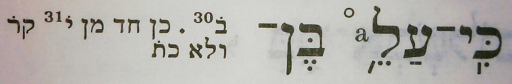

LC
BHS

AC

| bcv (link to tanach.us) | 2s18:20 |
| MPK | ◌ֵ֣◌ |
| qere-context | כִּֽי־עַל־כֵּ֥ן |
| qere | כֵּ֥ן |
| at issue | כּ |
| at issue English | added a dagesh to kaf |
| folio col line | 179A 3 10 |
The MPK has no letter to carry a dagesh for the qere’s כ. The MPK (points on no letters) is tsere and merkha.
Dotan notes that strictly speaking, the implied qere and the atom preceding it form the phrase עַל כֵ֥ן. (This implies the more complete phrase כִּֽי־עַל כֵ֥ן.) I do not take him to have noted this for the issue at hand: the lack of a dagesh in the implied qere. I take him to have noted this only because עַל is unexpectedly free of a trailing maqaf.
Note that, contrary to UXLC, עַל is a normal word, i.e. it is not part of a ketiv/qere. It is abnormal only in that it precedes a qere velo ketiv. (UXLC’s encoding is <k>על</k><q>עַל־</q>.)
The manuscript’s lack of a trailing maqaf on עַל is the subject of a currently-pending change proposal, 2024.04.01/2024.01.18-2.